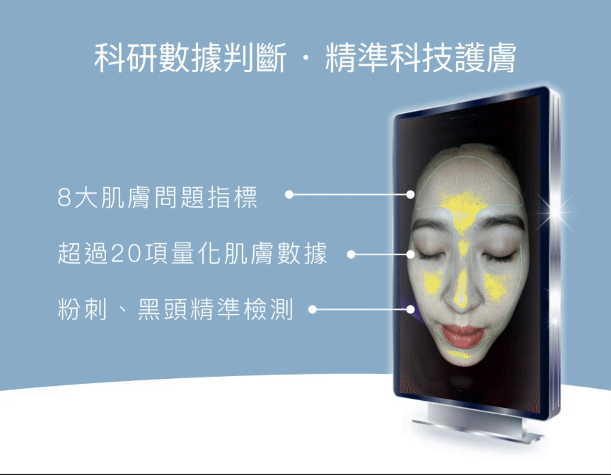
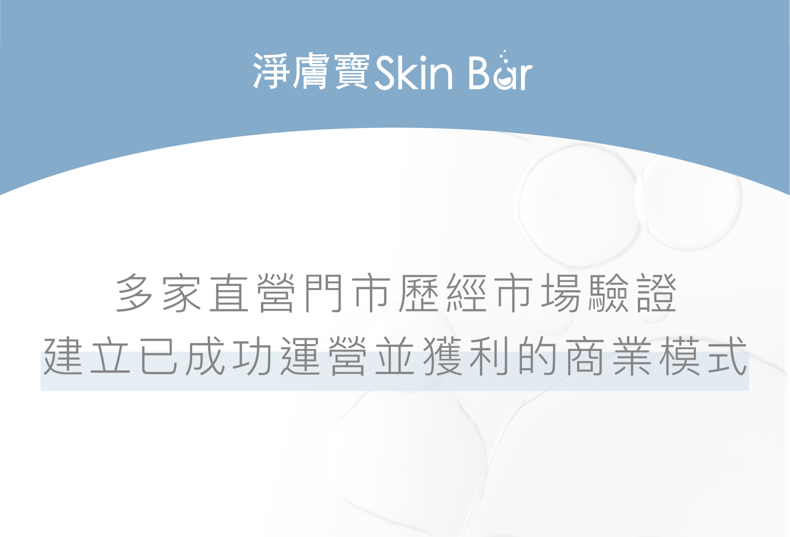
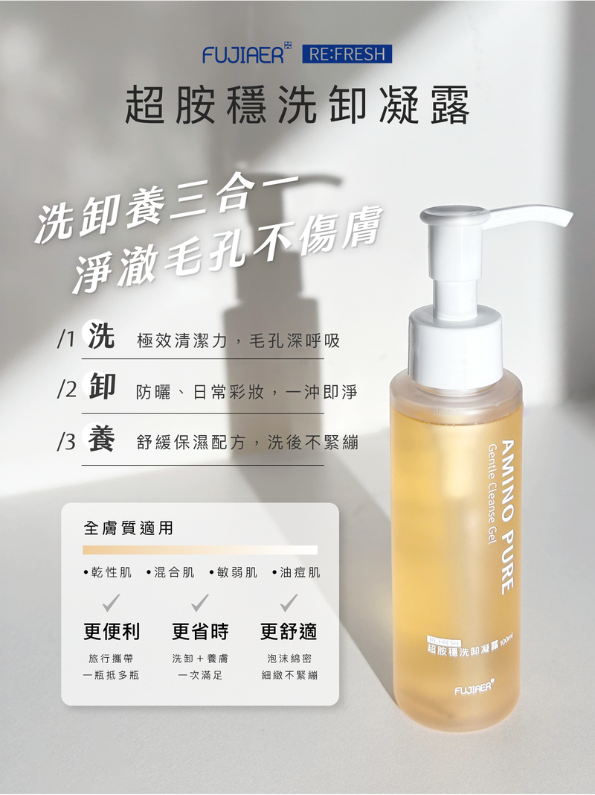
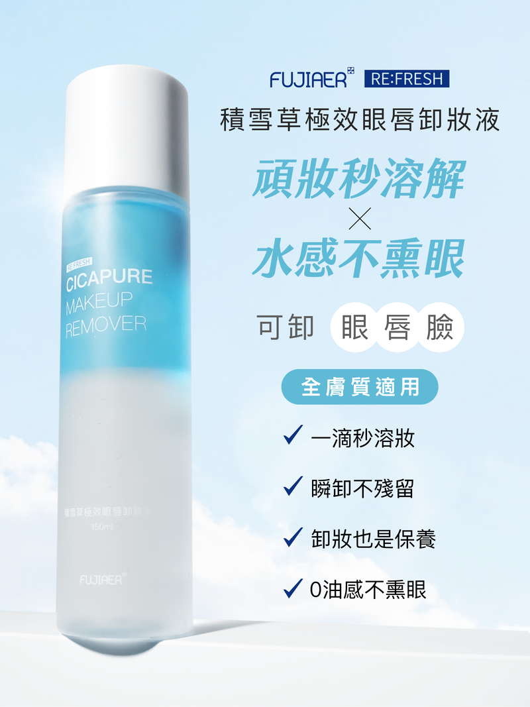
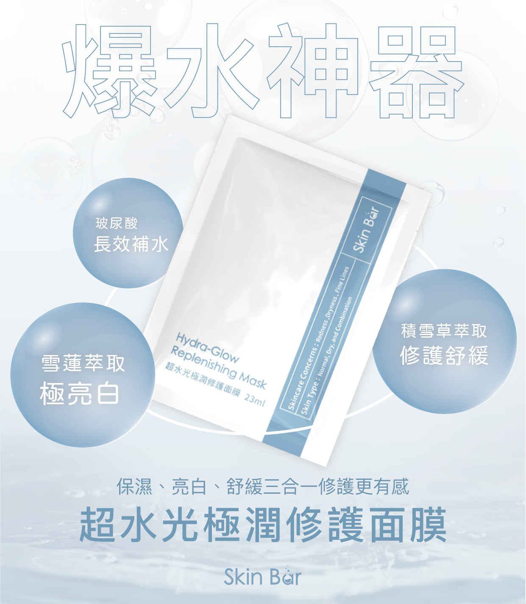
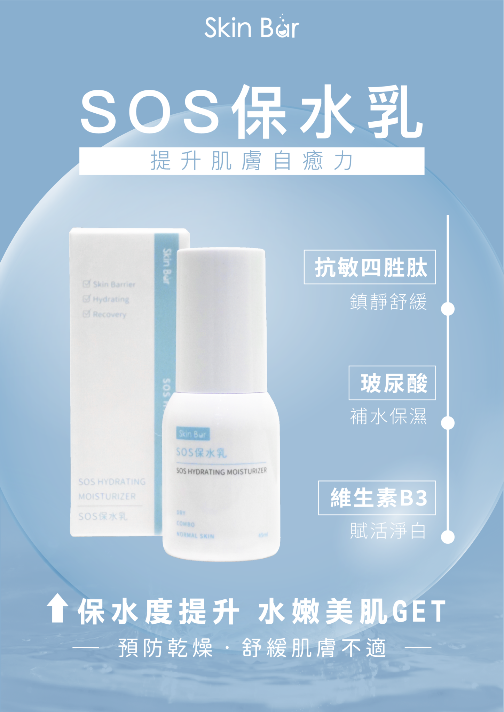

淨日生技股份有限公司
PUBLIC INTELLIGENCE · AI GROWTH PROPOSAL
從連鎖肌膚管理
走向智慧營運中台
公司登記、辦公據點、產品與客群、營收資訊邊界，以及 AI 復仇者聯盟可落地的 90 天方案。
2026.11.05公開資料版14 頁女聲導覽

COMPANY SNAPSHOT
一頁看懂公司主體
已核對
核准設立、稅籍營業中；登記機關為桃園市政府，監察人為游明陽。公開招募頁顯示團隊約 30 人。
ADDRESS & OFFICE
登記地與實際辦公據點，
要分開看
桃園市中壢區
環西路二段 292 號
同時可對應品牌「中壢環西店」。
工商證據較強→
桃園市中壢區
青埔路二段 111 號
加盟活動曾使用同棟 10 樓之 5。
較像總部／行政據點公開資料尚不足以斷言兩地的所有實際功能；正式合作前應向公司確認總部、倉儲、教育訓練與門市的分工。
POSITIONING
核心不是藥品研發，
而是科技美容連鎖
「國民科研做臉」把肌膚檢測、門市課程、居家保養與加盟支援串成一套可複製模式。
直營／加盟門市肌膚管理課程會員與儲值保養品零售教育訓練

SERVICE JOURNEY
門市服務，是一條完整體驗鏈
粉刺寶超爆水淨膚光淨化寶小顏拉提儀器導入
課程名稱與效果描述以官方網站為來源；美容保養不等於醫療診斷或治療。
RETAIL PRODUCTS
保養品，讓服務走出門市




官網表示部分產品由專業團隊與生技保養品牌合作開發，亦搭配韓國開發商產品；未公開完整 OEM／供應商名單。
NETWORK
連鎖版圖，已跨出台灣
基隆雙北桃園新竹台中高雄
澳門台灣輪廓：Natural Earth 公開資料約 39
官方網站列出的台灣店名
＋ 1 個海外據點澳門賈伯樂店
法律主體 ≠ 門市總數工商資料顯示公司正式分公司為 0；不少門市可能由加盟公司或商號經營。
CUSTOMERS
主要客戶，其實有三層
一般消費者
有粉刺、毛孔、清潔、保濕、亮白等保養需求的男女客群。
到店體驗 · 會員 · 回購加盟主
希望進入美業、取得品牌、SOP、教育訓練與營運支援的創業者。
加盟評估 · 開店 · 經營門市體系
需要一致話術、儀器、產品、庫存、稽核與行銷支援的店務團隊。
總部服務 · 供應 · 品質管理公開資料沒有可具名的企業客戶名單；此處描述的是客群與合作角色，不是客戶公司清冊。
REVENUE BOUNDARY
營業額：目前不能用公開資料硬算
公開已知
- 實收資本額 220 萬元
- 約 30 人公開團隊資訊
- 約 39 個台灣店名＋澳門據點
- 服務、加盟與零售並行
可信營收仍缺
- 直營／加盟店精確拆分
- 來客數、客單價、回訪率
- 加盟金、權利金、供應收入
- 儲值、退費與海外分潤
資本額≠營業額≠全體門市成交額
VISION
「讓科研式、標準化、親民的肌膚管理，
融入更多人的日常。」
融入更多人的日常。」
健康、美麗、自信
SOP、儀器、教育訓練
加盟展店與海外市場
依公司公開文字與實際展店方向整理；不是公司正式公布的完整五年計畫。
GROWTH FRICTION
快速連鎖化，會同時放大四個管理題目
客服分散
各店 LINE、價格、改期與禁忌話術不一致。
數據斷裂
廣告、預約、到店、儲值與回購難以串接。
SOP 漂移
新人與加盟店容易自行解讀課程與營運規範。
品牌風險
美容宣稱、圖片與促銷文字需要法規和版本管理。
AI AVENGERS
AI 復仇者聯盟：
先接營運，再做炫技
多店 LINE AI 客服
最近門市分流、價格／課程 FAQ、預約改期、提醒與真人轉接。
總部數據中台
串起廣告→預約→到店→成交→回訪→儲值→產品購買。
SOP 知識助理
按角色查詢、訓練測驗、版本核准、加盟店問題升級。
內容與加盟成長
SEO 在地頁、宣稱初篩、加盟名單分級、選址與口碑分析。
AI 不做醫療診斷；高風險膚況、交易承諾與客訴由真人接手。
90-DAY PILOT
90 天導入：小範圍、可驗收
建基線
選一個店點、一位總部窗口、一批核可 FAQ 與 SOP。
驗收：資料來源、權限、目前人工工時跑試點
上線內部客服草稿與預約分流，保留真人覆核。
驗收：正確率、轉人工率、爽約與回覆時間決定擴大
比較兩輪結果，評估擴到更多門市或先修正。
決策：擴大／修正／停止，依實際證據建議第一案「總部 AI 營運中台＋多店客服／預約」
SOURCES · LIMITS
來源與資料邊界
- 底部單一控制列整合頁次、翻頁、女聲講解與本頁講稿。
- 圖片均取自官方網站公開素材；品牌宣稱不等於第三方功效證明。
- 門市數是官網列出的店名，不等於淨日生技名下正式分公司數。
- 本簡報為公開資料研究與顧問提案，非淨日生技官方文件。
先讓資訊可信，再讓流程可量化，最後才讓 AI 放大成長。